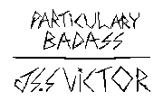

Posted on April 23, 2022
Last updated on April 23, 2022

Well, this one also took me quite a while
But this one was also made with a lot of care too!
Octo is this lil' fella I met in 2021, and although I've first heard of him
on Newgrounds due to his rotoscoped FNF' animation, the first time we truly
interacted with each other was ironically, on Twitter, a site we both despise
and that we'd eventually quit pretty much simultaneously
And ever since I met Octo, I've been introduced to so many cool things, I got
introduced to so many new people, and I've learned so many cool things
In fact, most of the stuff I like doing nowadays is pretty much because of him
either directly or indirectly
Octo got my interest on Linux to peak, eventually making me do the full switch
to Artix Linux once I got tired of Windows' bullshit
Octo got me to give Quake a chance after I had such a weird dislike towards it
And now, it's something I play on a daily basis and pretty much inspires my
style and preferences a lot, and he also made me remember my love towards Worms
so there's that too
Octo got me into this cool group that introduced me to so many cool friends
real ones that I talk and interact on a daily basis, and have been a big
highlight in my life, specially in recent years
Hell, this site itself, including some of it's features only exist because of
Octo, because his websites really resonated with me, and that inspired me to
seek to create my own
Octo's will be a big fucking meanie and call you racial slurs at the first chance
he gets, but he's a real one, the type of friend I've been asking for my whole life
and I'm glad we've come across each other, and the more I sit and think about it
This little fella' did a lot for me, so this is a way of saying
"Thanks for being a little rascal, and a great friend"
Octo's a real one, so are you.
I also plan to make more art of my friends, specially those who reached to me during
the fucked up episode I had a while ago, so keep in tune for more
I hope you're all having a great day
Cheers.
